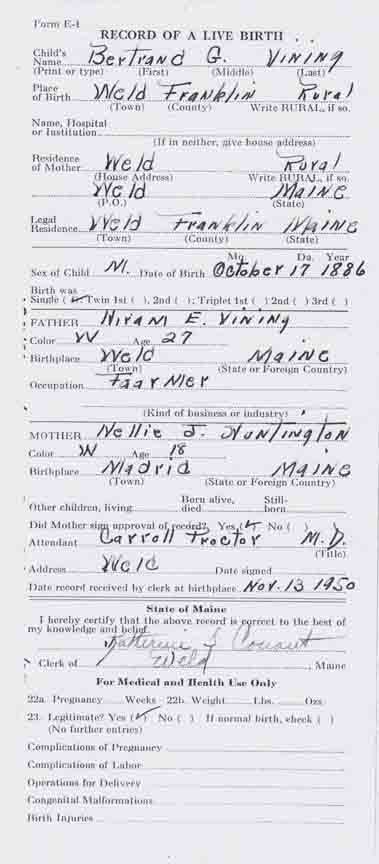
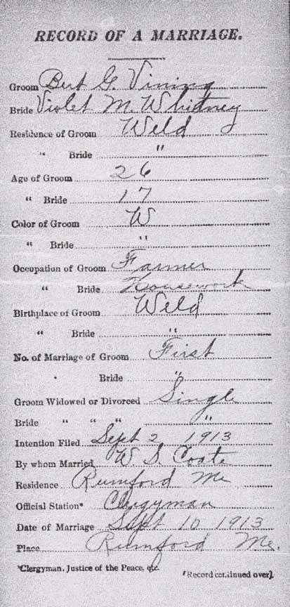
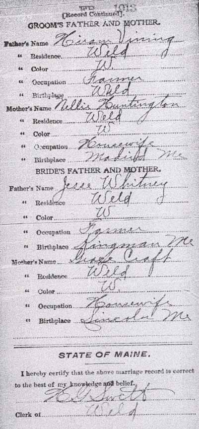
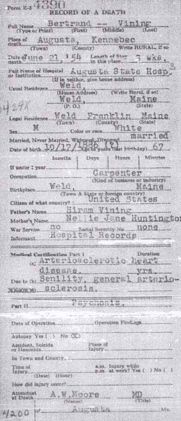
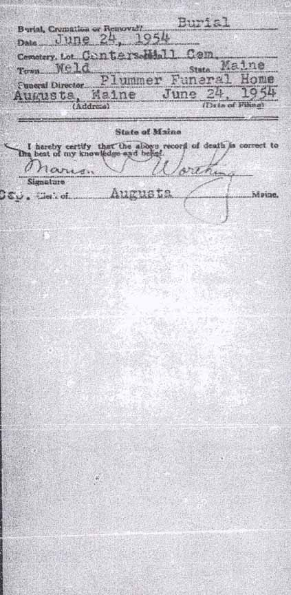

Birth Data
Birth record for Bertrand Guy Vining (from Maine State Archives):
Marriage Data
Marriage record for Bertrand Guy Vining and Violet Marion Whitney (from Maine State Archives):

Census Data
| 1920 | 1930 | 1940 | |
| Bertrand Guy Vining | 32 | 43 | 54 |
| Violet Marion (Whitney) Vining | 23 | 32 | 42 |
| Shirley Nathalie Vining | 6 | 16 | married and living in separate household |
| Lenora Neva Vining | 4 | 14 | married and living in separate household |
| Jesse George Vining | 1 year, 6 months | 11 | 21 |
| Quentin Delmont Vining | 10 | 20 | |
| Hiram Bertrand Vining | 7 | 18 | |
| Bernard Roy Vining | 5 | 15 | |
| Douglas Laurel Vining | 2 years, 8 months | living in separate household |


Death Data
Death record for Bertrand Guy Vining (from Maine State Archives):
